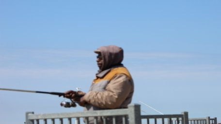

I'm a retired outreach worker for the county TB Clinic. After retirement I lived for a couple of years with my sister Carol on her farm. Now I have moved back in town and am living in a senior high rise in Cleveland. I wasn't a very good worker on the farm and I'm a little sloppy. But the big reeasons for moving back to town are 1. I have Parkinsons disease and 2. rather aggressive prostate cancer. The Cancer is under control at present and I just deal with the Parkinson's .
It's mid-March and my friend James and I are getting ready to start fishing. We fish Lake Erie in Cleveland and Lorain. We are going to try a couple of nearby ponds and inland lakes for Crappie.We may go fishing at the Lorain piers on the last Saturday in March if the temperature remains in the 40's to 50's.

March 30, 2021
Caught 3 White bass and 1 white perch at Lorain. Unusually warm day - high temp. was 70 deg. F. We didn't fish at our usual spot because a couple were found dead there. The mans body was found floating in the water on Monday. The womans body was still in the car under water. They had been missing for a few weeks.
April 5, 2021
Went back to Lorain. Caught no fish.
April 9, 2021
Went to Bayview on Sandusky Bay. James caught 6 or 7 catfish the largest weighing about 15 pounds. Lost count of the white perch caught.